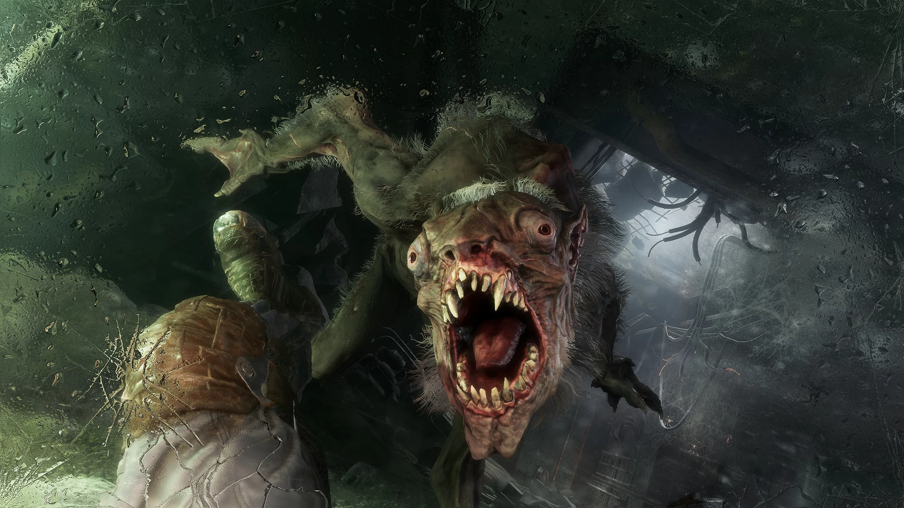
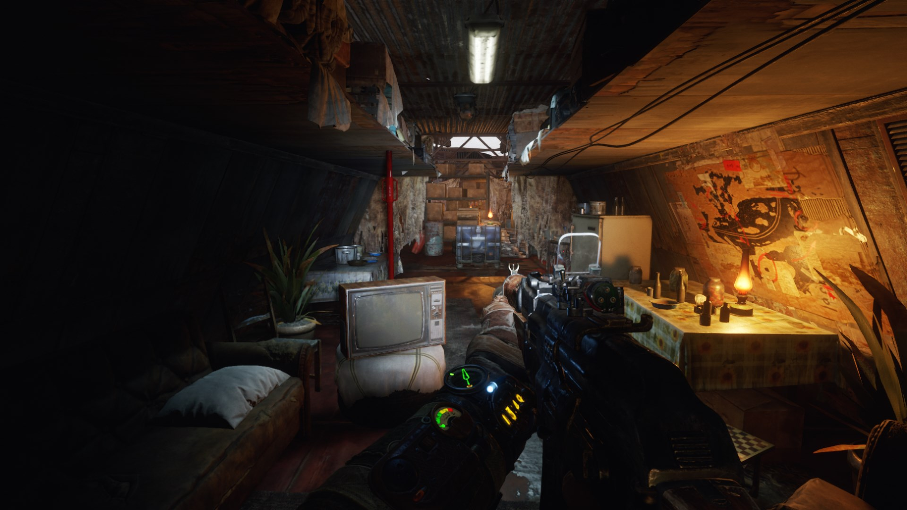
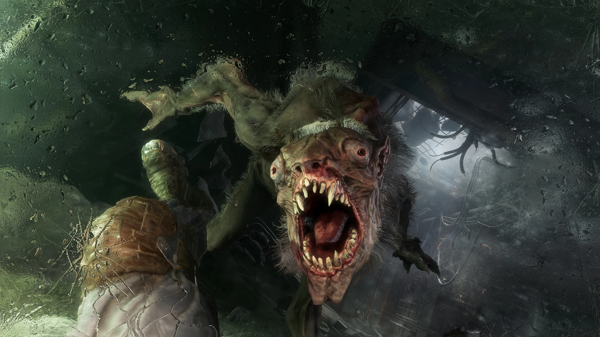
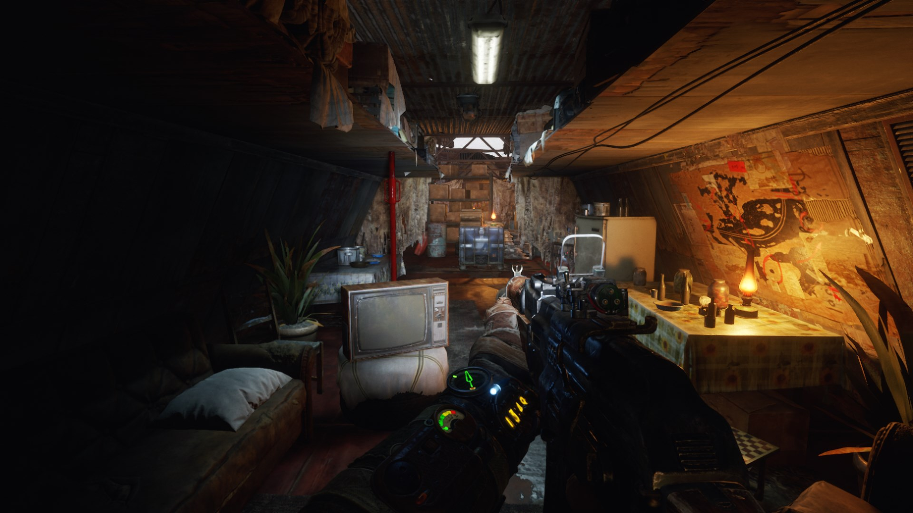

Сюжет
Пролог
После битвы за Д6 Артём ушёл из Ордена и женился на Анне. Полковник Мельник продолжает восстанавливать боевую силу Ордена. Артём всё чаще вспоминает, что когда он стоял на вершине Останкинской телебашни и направлял ракеты на логово Чёрных, то слышал по радио чьи-то радиопереговоры — и он уверен в том, что сигнал доносился не из Москвы. Предполагая, что за пределами столицы России также выжили люди, он совершает множество вылазок на поверхность в тщетной надежде поймать сигнал из-за пределов города. Анна и Мельник относятся с недовольством к вылазкам Артёма — они уверены в том, что, кроме жителей московского метро, на планете больше никто не выжил.
Москва
Во время очередной вылазки на Артёма нападает большая стая стражей. Отбиваясь от них, он получает тяжёлые ранения. От мутантов Артёма спасают бойцы отряда «Спарта», которые доставляют его на ВДНХ, где ему переливают кровь. Анна уговаривает своего мужа прекратить совершать безрезультатные и вредные для здоровья вылазки. Мельник соглашается со словами Анны и уверяет, что за пределами московского метро нет никаких признаков жизни. Также полковник предлагает Артёму вернуться обратно в Орден. Спустя неделю Артём, ослушавшись полковника, вновь отправляется на вылазку вместе с Анной. Радиопередатчик по-прежнему молчит. Возвращаясь домой на ВДНХ и отбиваясь от мутантов, Артём и Анна к своему удивлению замечают паровоз, движущийся в сторону Балашихи по железной дороге. В этот момент подъезжает фургон с солдатами Ганзы, которых герои принимают за своих людей из Ордена и, в надежде настигнуть поезд, садятся в него. Недружелюбно настроенные ганзейцы схватывают их. В грузовике пленные Артём и Анна неожиданно обнаруживают людей из провинции, которые добрались в Москву из деревни. Артём оказался прав по поводу выживших за пределами столицы. Добравшись до Балашихи, ганзейцы расстреливают приезжих и Артёма, который попытался защитить их. Благодаря жетону Хантера, остановившему пулю, Артём чудом остаётся в живых и оказывается в яме с трупами. Выбравшись из ямы, Артём тайком пробирается на базу Ганзы — депо, где стоит виденный им ранее паровоз. Артёму помогает машинист паровоза Ермак, которого заточили в комнате. Добравшись до командного центра, Артём спасает Анну. В ходе завязавшейся схватки Артём и Анна случайно уничтожают аппаратуру, из-за чего в командный центр стали транслироваться радиосигналы от выживших со всех континентов. Ганзейский командир объясняет им, что Артём и Анна только что вывели из строя устройство подавления радиосигналов. По словам командира, изоляция Москвы от остального мира обеспечивает безопасность её оставшихся жителей, так как война всё ещё продолжается. Артём и Анна освобождают Ермака и угоняют паровоз, но их настигает группа зачистки. Этой группой оказываются товарищи Артёма — отряд спартанцев во главе с Мельником, а также двое офицеров Ганзы. В ходе словесной потасовки выясняется, что Артём и Анна совершили непростительный поступок со стороны Невидимых наблюдателей — уцелевших представителей правительства России, укрывшихся в Москве, — и теперь им за это грозит расстрел. Ради спасения Артёма и Анны полковник жертвует своей репутацией, решаясь на дезертирство. Бойцы Мельника говорят, что поедут вместе с ним. Выкинув с борта офицеров Ганзы и отбившись от преследования второго поезда Ганзы, отряд покидает Москву на паровозе. Отдалившись на значительное расстояние от столицы, беглецы обнаруживают, что здешний радиационный фон находится в пределах нормы, благодаря чему можно свободно дышать на поверхности без противогаза. Полковник объясняет, что теперь единственный шанс на прощение для них — это связаться с уцелевшим высшим руководством страны, которое расположилось в бункере у горы Ямантау на Урале. По приказу Мельника Артём с помощью радиоприёмника ловит сигнал из Ямантау, узнав координаты местонахождения бункера. Группа даёт паровозу имя «Аврора» в честь богини утренней зари и крейсера, отправившись в путь к горе Ямантау.
Волга
С наступлением весны спустя два месяца паровоз беглецов подъезжает к мосту через реку Волга. На мосту паровоз атакуют неизвестные люди. Паровоз крушит лежащие на путях баррикады, из-за чего ломается и останавливается. Мельник предполагает, что это были иностранные оккупанты. Из-за поломки паровоза полковник отправляет Артёма и Анну на разведку в замеченную группой церковь, а остальным бойцам приказывает занять оборонительные позиции. В церкви Артём натыкается на проповедь отца Силантия — лидера секты электроборцев, отвергающей электронные технологии. Попав в ловушку сектантов, Артём пытается выбраться из церкви и обнаруживает Катю и её дочь Настю, находящихся в плену у Силантия. Артём находит пришвартованную лодку и покидает пределы церкви. Анна по рации сообщает, что уже доставила Катю и Настю на «Аврору». Артёма с берега замечает Князь, которого послал Мельник на разведку. По возвращении на берег на Артёма набрасывается «Царь-рыба» — огромный мутировавший сом, являющийся божеством у электроборцев. Рыба разносит в щепки его лодку, Князь помогает Артёму выбраться на берег. После разговора с Князем Артём возвращается к группе спартанцев. От Кати Мельник узнаёт о механике по кличке Крест, который сможет помочь в починке паровоза. По приказу Мельника Артём добирается до Креста и убеждает его помочь починить сломанную «Аврору» вместе с Ермаком и присоединиться к команде. Возвращаясь к локомотиву, Артём слышит голос Мельника по рации, который просит вместе с Дамиром и Сэмом найти Анну. Степан говорит, что она ушла на разведку района с антеннами. Артём направляется туда и находит яму, ведущую в наполненный ядовитым газом подвал. Главный герой проваливается туда и находит полуживую Анну с приступами кашля. Артём надевает на неё противогаз, а подоспевшие сюда Сэм и Дамир отводят Анну на «Аврору». Позже Мельник рассказывает Артёму, что можно пересечь мост сектантов без штурма, если пробраться на баржу торгового каравана и под видом торговцев попытаться опустить секцию моста. Анна предлагает доставить и прицепить к паровозу находящийся в депо вагон для возросшего экипажа, куда теперь вошли Катя, Настя и Крест. Крест говорит, что у него в терминале есть собственная дрезина, способная перетащить вагон к паровозу. Мельник соглашается с возникшим планом и посылает Артёма за дрезиной. После стычки с бандитами и мутантами-зверолюдьми Артём находит дрезину, прицепляя к ней вагон и доставляет состав к «Авроре». Прибыв к мосту на барже торговцев, Артём и Князь добираются до Силантия. В зависимости действий, совершенных Артёмом ранее на Волге, Силантий либо согласится опустить мост и мирно пропустить состав «Авроры», либо же забьёт тревогу и будет оглушён. В любом случае группа Мельника пересечёт Волгу через мост на «Авроре», однако Князь может погибнуть в зависимости от действий Силантия. Позже Мельник вызывает к себе Артёма и обсуждает предстоящую встречу с министром обороны.
Ямантау
Спартанцы достигают Ямантау, но быстро обнаруживают, что гражданские сотрудники и военнослужащие правительственного убежища, так и не дождавшись руководства страны, превратились в каннибалов, заманивающих выживших ложным обещанием безопасности. Артёму и спартанцам удается вырваться и сбежать, но вера Мельника в сохранение действующего правительства подорвана, и все задаются вопросом, что делать дальше.
Каспий
Используя карту, которую они нашли в Ямантау, они решают отправиться в центр спутниковой связи «Каспий-1» возле Каспийского моря в надежде получить доступ к спутнику, чтобы найти пригодную для жизни землю для заселения. На высохших остатках Каспийского моря спартанцы крадут столь необходимую воду и топливо у местных бандитов и освобождают местных рабов, получая обновленную спутниковую карту.
Тайга
Пока спартанцы продолжают свое путешествие, Анна начинает кашлять кровью. Опасаясь, что причиной было случайное вдыхание ядовитого газа во время путешествия, герои решили исследовать близлежащую лесную долину, чтобы посмотреть, подходит ли она для поселения. Пробираясь через лес, Артём оказывается между двумя выжившими фракциями, обе из которых терроризируются гигантским медведем-мутантом, которого называют Хозяином леса. Однако он также обнаруживает, что плотина, защищающая долину от радиации, находится на грани разрушения, что делает район непригодным для заселения. Артём побеждает Хозяина леса и возвращается к поезду, но состояние Анны ухудшилось. Единственный шанс спасти Анну - найти противоядие в Новосибирске, несмотря на высокое радиоактивное заражение города.
Новосибирск
Несмотря на риск облучения, Мельник и Артём решают отправиться в город в поисках лекарства. Они добираются до Новосибирского метрополитена, где находят мальчика по имени Кирилл — единственного живого человека, встреченного ими в городе. Кирилл рассказывает, что его отец отправился на поиски карты, отмечающей местоположение чистого, пригодного для заселения района. Мельник решает пойти за картой, а Артём отправляется на поиски лекарства в Новосибирский НИИ, где до войны разработали несколько передовых лекарственных препаратов. По мере продвижения вглубь города он сильно облучается и видит галлюцинации. Артёму удается найти лекарство, но он тяжело ранен мутантом «Слепышом» — мутировавшей гориллой. Артём, Мельник и Кирилл возвращаются к поезду с картой и лекарством, но по пути Мельник умирает от радиационного облучения.
Байкал
Из-за критической дозы радиации, полученной Артёмом, ему необходимо переливание крови, в котором принимают участие его спутники. Анна излечивается с помощью найденного лекарства. Экипаж «Авроры» селится на берегу озера Байкал, свободного от радиации и мутантов. Судьба самого Артёма зависит от совершённых им в ходе путешествия поступков и зависящих от этого судеб некоторых членов экипажа. В плохой концовке Артём умирает от радиационного облучения, а спартанцы и скорбящая Анна устраивают похороны для него и Мельника. В хорошей концовке Артём выживает благодаря переливанию крови. Мельник похоронен, а Артём единогласно выбран новым лидером ордена «Спарта». Теперь, когда у них есть дом, Артём решает, что пришло время искать других выживших.
 


